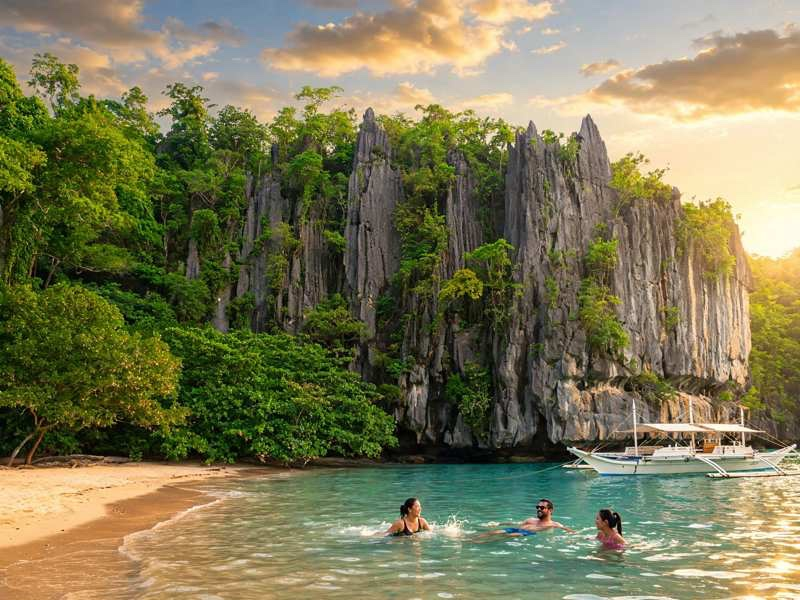

You cannot walk up to Sabang Wharf and buy a ticket for the Puerto Princesa Underground River. Every visitor needs a permit tied to a date, and the park lets in only about 900 to 1,000 people a day. Get the permit first, then book your flight, van and room around it.
This guide covers how the permit works, the two ways to get one, what the day costs in pesos, how to reach Sabang, and which months give you the best odds of a boat that actually sails. Fees and schedules shift from year to year, so treat the prices below as a planning range and confirm them when you book.
The river is worth the paperwork. The Puerto Princesa Subterranean River National Park was inscribed as a UNESCO World Heritage Site on 4 December 1999 and later named one of the New7Wonders of Nature. The cave river runs about 8.2 kilometres through limestone karst before it reaches the sea, and visitors see roughly the first 1.5 kilometres by paddle boat.

How the Underground River Tour Works
The park sits about 81 kilometres north of Puerto Princesa City, in the village of Sabang on Palawan's west coast. A motorised bangka takes you from Sabang Wharf to the cave beach in about 20 minutes, longer if the sea is choppy. A short forest trail leads to the cave mouth, where you switch to a small paddle boat with a boatman and a ranger.
Inside, you wear a headlamp, listen to an audio guide and glide past formations with names like Holywell and Cathedral, with bats overhead. Flash photography is not allowed and voices should stay low. The boat ride inside takes 45 minutes to an hour, and the whole day from the city runs 8 to 10 hours once you count the drive, the queue and lunch.
Two Ways to Get a Permit
Option A: Book a Joining Tour
For most people this is the easy route. A tour operator in Puerto Princesa holds the permit for you, so there is no office visit and no hunting for a slot. Joining tours generally cost PHP 2,200 to PHP 2,850 per person and usually bundle the permit, hotel pickup, van, Sabang boat, audio guide, environmental fee, guide and a buffet lunch. Ask what is included before you pay, because a few operators price the audio guide or lunch separately.
The operator will ask for each traveller's full name, birthdate and a copy of a valid ID, usually a day or two ahead. Peak season runs from mid-December to May, with Holy Week and the Christmas stretch filling first. In those weeks, book three to seven days ahead, and earlier if your dates are fixed.
Option B: Get the Permit Yourself
Doing it yourself saves a little money and costs more time. The city's booking office for the Underground River is at the City Coliseum in Barangay San Pedro along the National Highway, a short tricycle ride from the airport. It has generally been open Monday to Saturday, roughly 8 am to 5 pm, but check the Visit Puerto Princesa page for current hours before you go. Bring a valid government ID for every person in your group.
An online reservation system exists through the city tourism office, but it has been patchy, and plenty of travellers still end up queuing at the Coliseum. If the website works, use it. If it does not, plan to go in person a day or two before your tour, which means arriving in the city early enough to do so.
Book only through the city tourism office or a tour operator you can trace, with a business page and a permit you can see on your voucher. A random message offering a permit for a fee is not worth the risk when the whole trip depends on it.
What the Day Costs
Here is a rough per-person breakdown if you go it alone and split the boat and van with others:
- Permit: about PHP 250
- Audio guide: about PHP 85
- Environmental fee: about PHP 150 (a lower rate applies to seniors, PWDs and minors)
- Sabang boat: PHP 1,300 to PHP 1,600 per boat, so roughly PHP 160 to PHP 270 each when six to eight people share
- Van, round trip: PHP 600 to PHP 700 on a shared public van, or PHP 6,000 to PHP 8,000 for a private van split among the group
Add those up and a shared, do-it-yourself day lands around PHP 1,250 to PHP 1,450 before food. That is cheaper than a joining tour on paper, but you pay with logistics: a trip to the Coliseum, a van scramble at dawn, and no one to sort things out if a boat is cancelled. A private van makes sense from about four people up.
The permit and the fees are set by the city and the park, so confirm them at the booking office or with your operator. Bring cash for the Sabang fees and a little extra for tips, water and snacks.
Getting to Sabang
Shared vans leave from the San Jose Terminal in Puerto Princesa when they fill, from early morning to late afternoon. Expect two hours or a bit more each way, with the last stretch rougher and more winding than the highway. Air-conditioned buses also run, take longer, and leave less often. Most tour groups are collected from city hotels between 6:30 and 7:30 am.
If you would rather skip the early start, sleep in Sabang the night before. Guesthouses start around PHP 1,200, and the first boats leave around 8 am, which is when the sea is usually calmest and the crowds are thinnest. Tell your operator if you are staying in Sabang, because pickup arrangements differ.
Reaching Puerto Princesa by Air
Puerto Princesa is Palawan's main airport, about 3 kilometres from the city centre. Direct flights link it with Cebu, and the trip takes roughly an hour and a quarter to an hour and a half. Fares swing a lot: seat sales can drop one-way tickets to the PHP 900 to PHP 1,800 range, while regular fares run higher. Flights through Manila are the fallback when the direct seats are full or expensive.
There is no practical passenger ferry between Cebu and Palawan. The long sea route goes through Manila and takes about two days, which makes it a poor fit for a short trip. Airlines change schedules often, so check the current timetable before you buy.
For a three-day, two-night trip, a typical budget-to-midrange spend is about PHP 6,700 to PHP 11,550 per person for return flights, two nights in the city, the joining tour and meals. A simple plan is to arrive the day before, sort out any permit business, do the river on day two, and keep the last day for Honda Bay or a flight home.
Best Months and What to Pack
The dry season, from November to May, is the safer window. March to May gives the calmest seas and the fewest cancelled boats, but it is hot, humid and the most crowded. November to February is cooler, though the northeast monsoon can make the Sabang crossing choppy. From June to October, rain and rough seas bring more cancellations, and the wharf can close for days after a storm. It is not impossible to go then, but leave a spare day.
Pack a valid ID, since it is checked more than once, plus quick-dry clothes, aqua shoes or strapped sandals for the muddy trail, a dry bag for your phone and wallet, sunscreen, a hat and insect repellent. Life vests are provided on both boats. Drones, loudspeakers and flash photography are not allowed. If you get seasick, take your tablet before the boat. If you have asthma or are very uneasy in tight spaces, mention it to your operator beforehand.
Plan the Permit Before Everything Else
The order matters more than any single fee. Lock in the permit date, then buy flights and book the van and hotel around it. During December to April a flight is easier to find than a permit, and landing without one can leave you waiting in town for a free slot.
Do not expect to swim at Sabang on river day, because the schedule is tight and the currents can run strong. If you want beach time, add Honda Bay, or head north afterwards. Our comparison of El Nido, Coron and Puerto Princesa will help you decide how many days to give the province, and the quieter side of Palawan around Port Barton and San Vicente makes a good follow-up. If you are weighing the cost of a flight against a long sea trip, see our ferry versus flight budget guide.


Comments
No comments yet. Been here recently? Share a tip or ask a question.
Leave a Reply